Antalya’da girişim, teknoloji ve iş birliği. Palmiye, tek renk siluet ve sakin serif tipografi aynı kimliği web, profil ve paylaşım alanlarına taşır.
Kelime işareti: Lora 600. Başlıklar: Lora 500. Arayüz: Manrope. İsim her zaman AkdenizOS yazılır. Palmiye çevresinde yüksekliğinin en az dörtte biri kadar boşluk bırakılır. İşareti esnetme, döndürme, gölge veya detay ekleme. 24 px ve altında palmiye tek başına kullanılır.
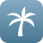
Mavi zemin, açık ve koyu tarayıcı sekmelerinde beyaz palmiyenin okunmasını sağlar.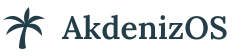
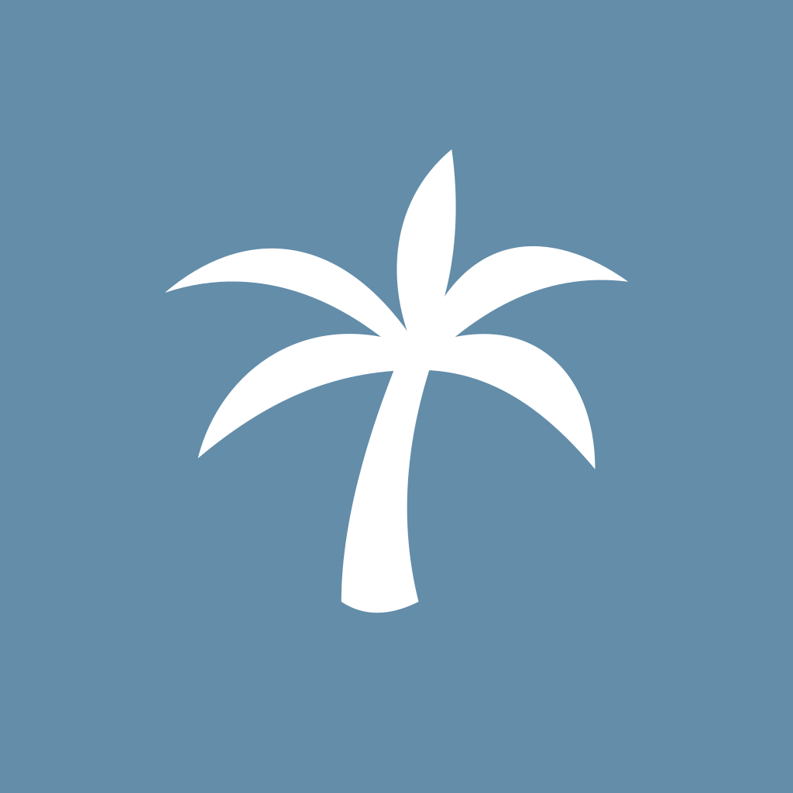
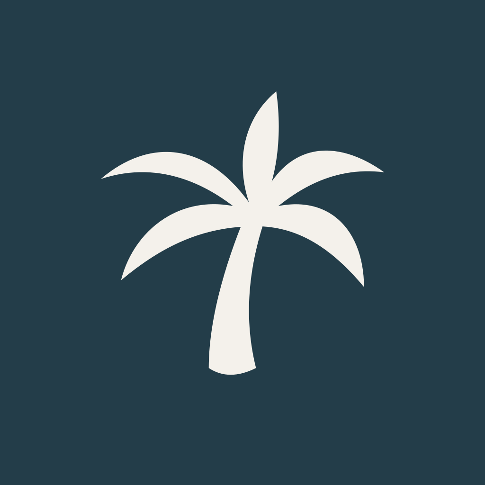
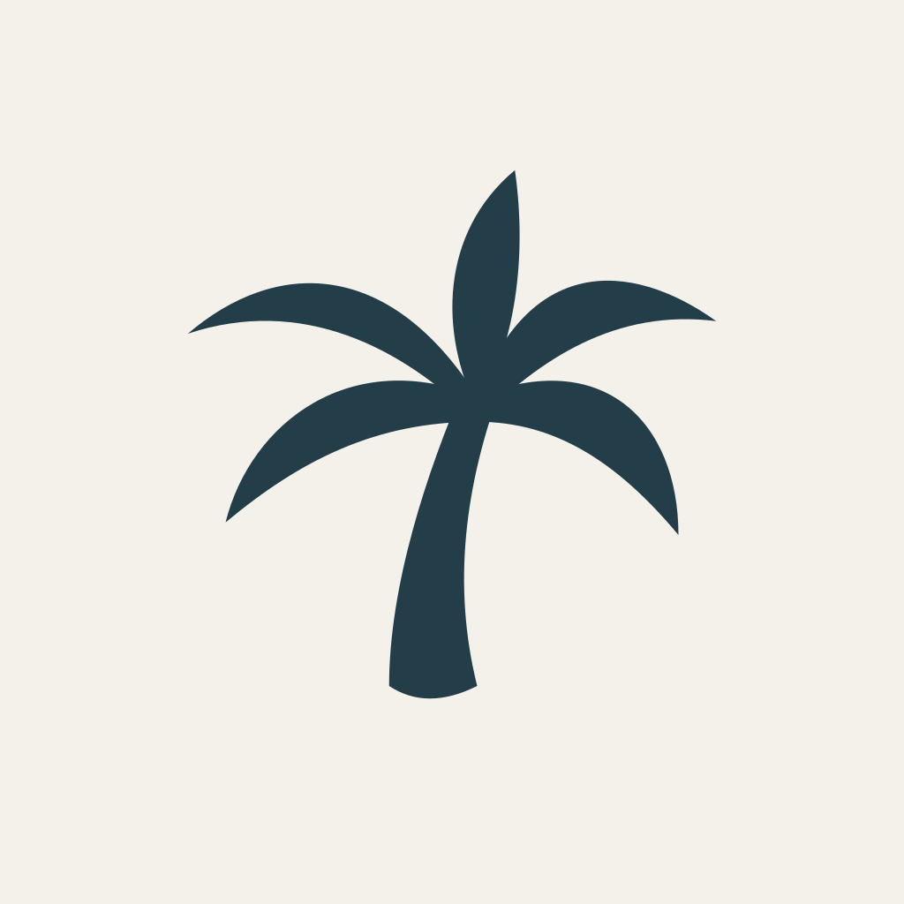
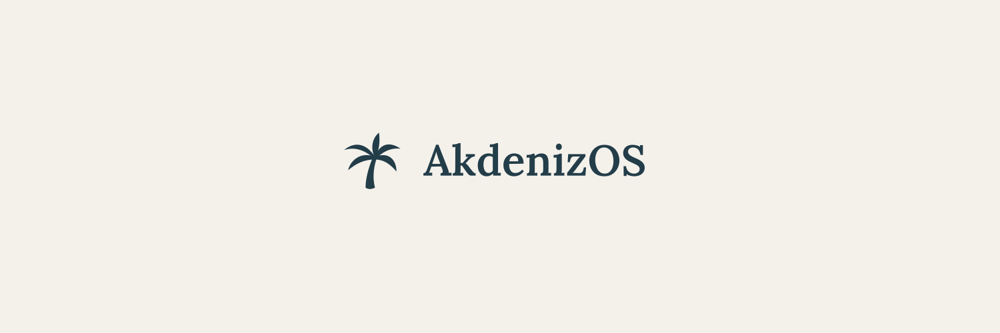
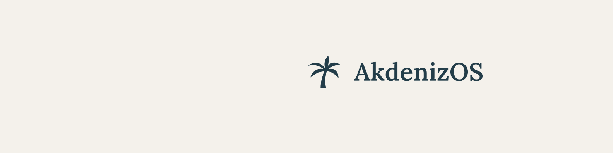
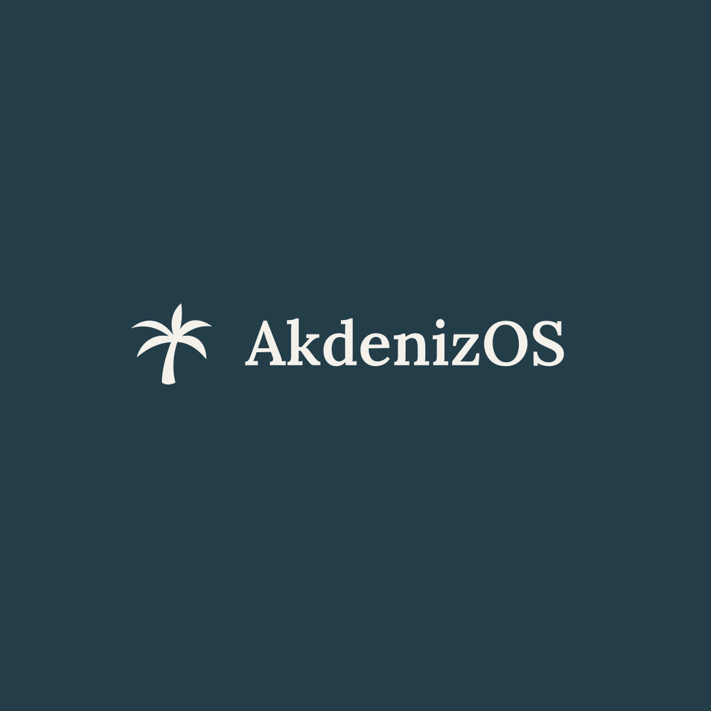
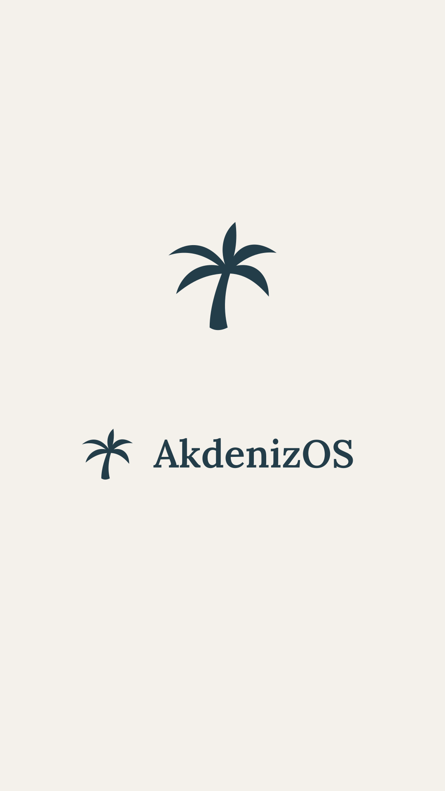
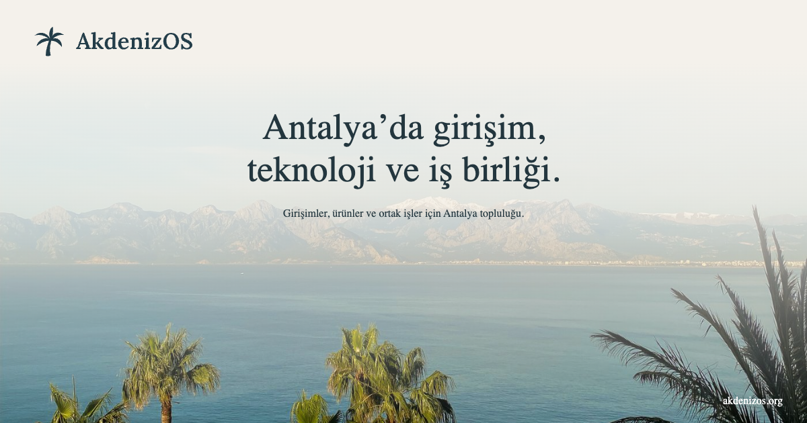
Dosyalar SVG ve PNG olarak sunulur. SVG baskı ve ölçekleme, PNG profil ve sosyal platformlar içindir. Fotoğraf kaynakları ana sayfanın altında listelenir. Yazı tipi lisansları pakette yer alır. Bu kit marka tescili veya benzersizlik doğrulaması içermez.